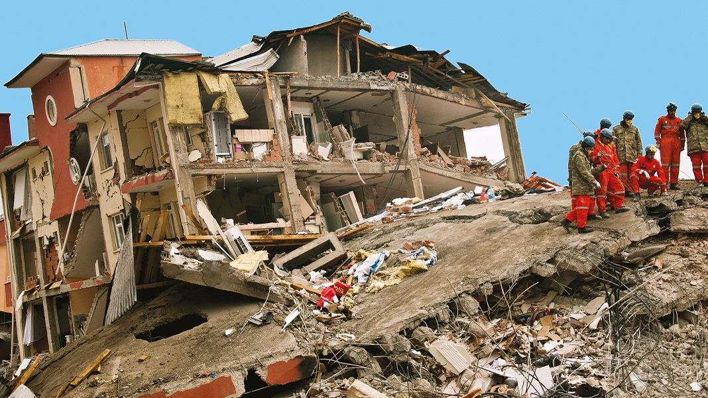

Olusum Mekanizmasi
Tektonik plakalar hareket ettikce fay hatlarinda gerilim birikir. Bu gerilim kirilma ile bosalir ve deprem dalgalari yayilir.
Deprem, yerkabugunda biriken enerjinin aniden bosalmasiyla olusan sismik olaydir.

Tektonik plakalar hareket ettikce fay hatlarinda gerilim birikir. Bu gerilim kirilma ile bosalir ve deprem dalgalari yayilir.
Buyukluk aciga cikan enerjiyi, siddet ise insanlarin hissettigi etkileri ifade eder. Derinlik ve zemin kosullari hasari degistirir.
Ilk saatlerde guvenli alana gecis, yaralilara ilk yardim ve resmi yonlendirmeleri takip etmek en kritik adimlardandir.